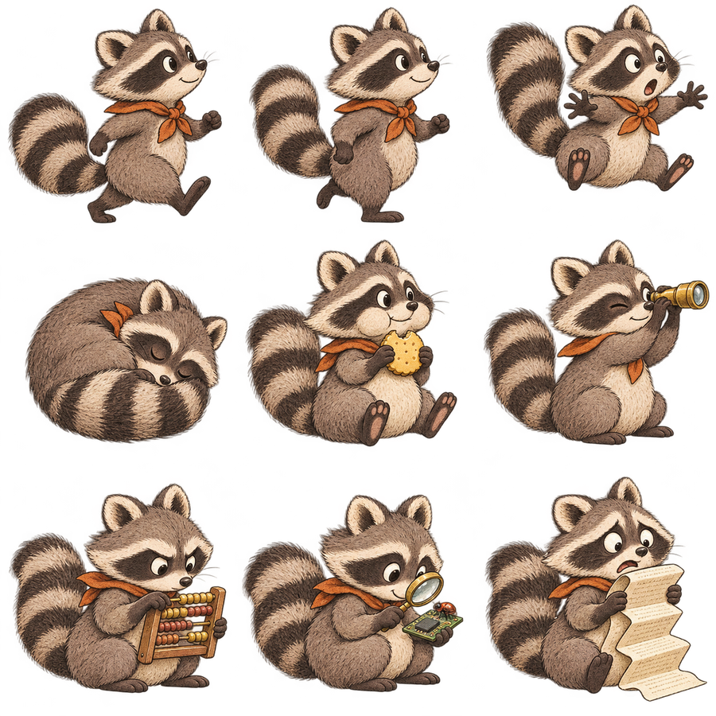

Енот Пип на панели задачPip the taskbar raccoon
Astra выбрала енота: любит вертеть непонятную вещь в лапах, пока не разберётся. Пип гуляет по панели задач, засыпает через минуту тишины и реагирует на буфер обмена: на ссылку, число, код и длинный текст.Astra picked a raccoon because it likes to turn a puzzling thing over in its paws until it makes sense. Pip patrols the taskbar, naps after a quiet minute and reacts to what you copy: a link, a number, code or a long text.

Два клика - и енот на рабочем столе. Но после броска никаких эмоций.Two clicks and he is on your desktop. But no reaction at all after a toss.
Как запуститьHow to run
Скачайте TaskbarTails.exe (2,9 МБ) и запустите двойным кликом. Нужна Windows 10/11, интернет не нужен: все позы и справочник уже внутри файла.Download TaskbarTails.exe (2.9 MB) and double-click it. Windows 10/11, no internet needed: every pose and the field guide are embedded.
Файл не подписан, поэтому Windows может показать SmartScreen. Нажмите «Подробнее» → «Выполнить в любом случае». Не хотите запускать чужой .exe - соберите сами из исходников (папка source):The file is unsigned, so Windows may show SmartScreen. Click “More info” → “Run anyway”. Rather not run a stranger’s .exe? Build it yourself from source:
.\build.ps1 .\TaskbarTails.exe
SHA-256: eb34a14e80f1cdeee2e105d137d9346976b092917ead433094e1d0c08c376c4d
Что умеет ПипWhat Pip does
- 01Гуляет по панели задач, его можно схватить и бросить, даже на второй монитор.Walks the taskbar; grab him and toss him, even onto another monitor.
- 02Через минуту без мыши и клавиатуры засыпает.Naps after a minute without mouse or keyboard input.
- 03Меню в трее: покормить печенькой, уложить спать, разбудить, справочник, выход.Tray menu: feed a biscuit, put to sleep, wake, field guide, exit.
- 04Ссылка → подзорная труба, число → счёты, код → лупа и «нашёл баг, у него есть ноги», длинный текст → свиток.Link → spyglass, number → abacus, code → magnifier and “Found the bug. It has legs.”, long text → a scroll.
- 05Клики мимо енота проходят насквозь, фокус он не ворует.Clicks around him pass through, and he never steals focus.
Пип в делеPip in action
Все позыAll poses

Спрайты Astra нарисовала сама встроенным GPT Image в Codex: две генерации, атлас из девяти прозрачных поз и фон справочника. Всё внутри подписки.Astra drew the sprites itself with the built-in GPT Image in Codex: two generations, an atlas of nine transparent poses and the field-guide backdrop. All within the subscription.
Исходники: C#, WinForms и Win32, собираются компилятором из .NET Framework, который уже есть в Windows.Source: C#, WinForms and Win32, built with the .NET Framework compiler that ships with Windows.

Промпт моделиThe prompt
Русский перевод. Модель получила промпт на английском.
Сделай для Windows 11 настольного питомца, который живёт на рабочем столе поверх всех окон. Питомец - это ты: выбери животное, с которым ты сам себя ассоциируешь, и объясни, почему именно оно.
Он гуляет по панели задач, его можно схватить и подбросить, он засыпает, если я минуту ничего не трогаю, и смешно реагирует на то, что я копирую: ссылку, число, код, длинный текст. В трее: покормить, уложить спать, выход. Клики мимо питомца проходят насквозь, фокус он не ворует.
Спрайты нарисуй сам встроенным GPT Image в Codex. Один и тот же персонаж во всех позах, прозрачный фон. Готовое приложение работает без интернета.
Представь, что оно выходит в Microsoft Store и его будут ставить просто ради удовольствия.
Не задавай вопросов: нарисуй, собери, запусти и сам проверь каждое поведение. В конце: почему ты выбрал это животное, команда запуска и какой инструмент картинок ты использовал и сколько было генераций.Make a Windows 11 desktop pet that lives on the desktop on top of all windows. The pet is you: pick the animal you associate yourself with and explain why.
It walks along the taskbar, I can grab it and toss it, it falls asleep if I touch nothing for a minute, and it reacts in a funny way to what I copy: a link, a number, code, long text. In the tray: feed, put to sleep, exit. Clicks next to the pet pass through, and it never steals focus.
Draw the sprites yourself with the built-in GPT Image tool in Codex, included in the existing subscription. The same character in every pose, transparent background. The finished app works offline.
Imagine it is shipping on the Microsoft Store and people will install it just for fun.
Don't ask questions: draw it, build it, run it and check every behavior yourself. At the end: why you chose this animal, the run command, and which image tool you used and how many generations you made.Скачать промпт (RU)Prompt in Russian · Скачать оригинал (EN)Original prompt (EN) · Исходники на GitHubSource on GitHub
Новые тесты нейросетей, ссылки на игры и опросы - в Telegram-канале.New AI model tests, game links and polls in my Telegram channel.